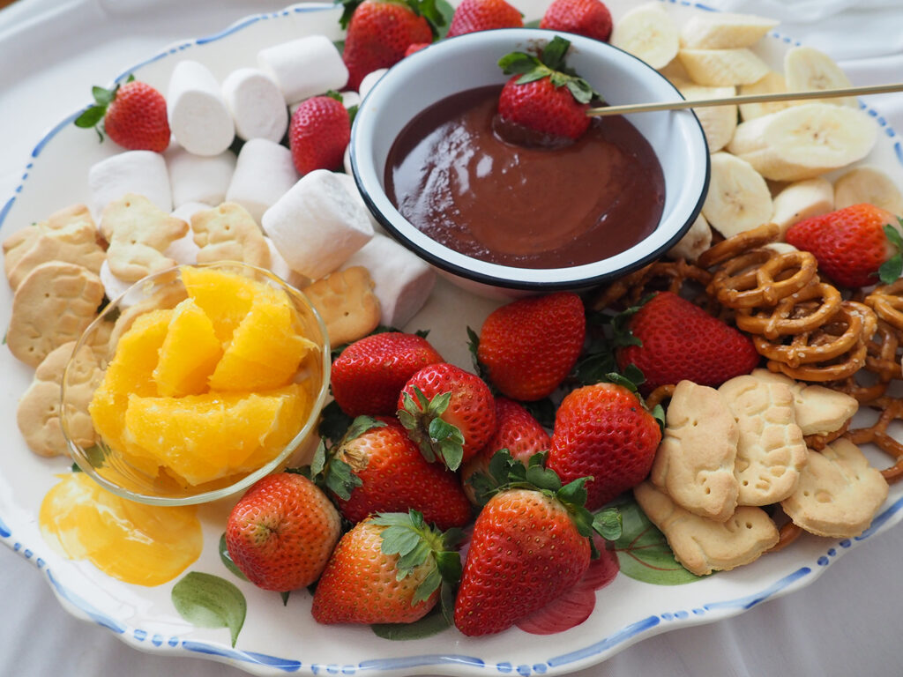
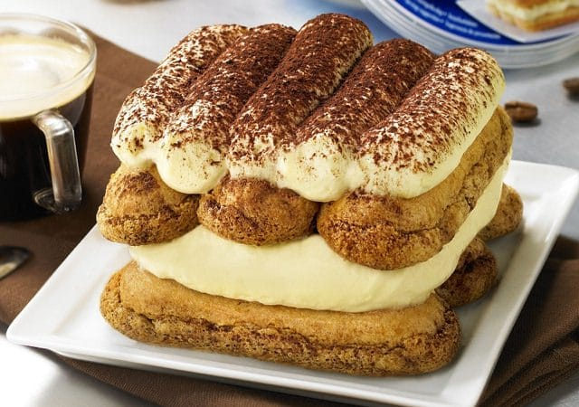
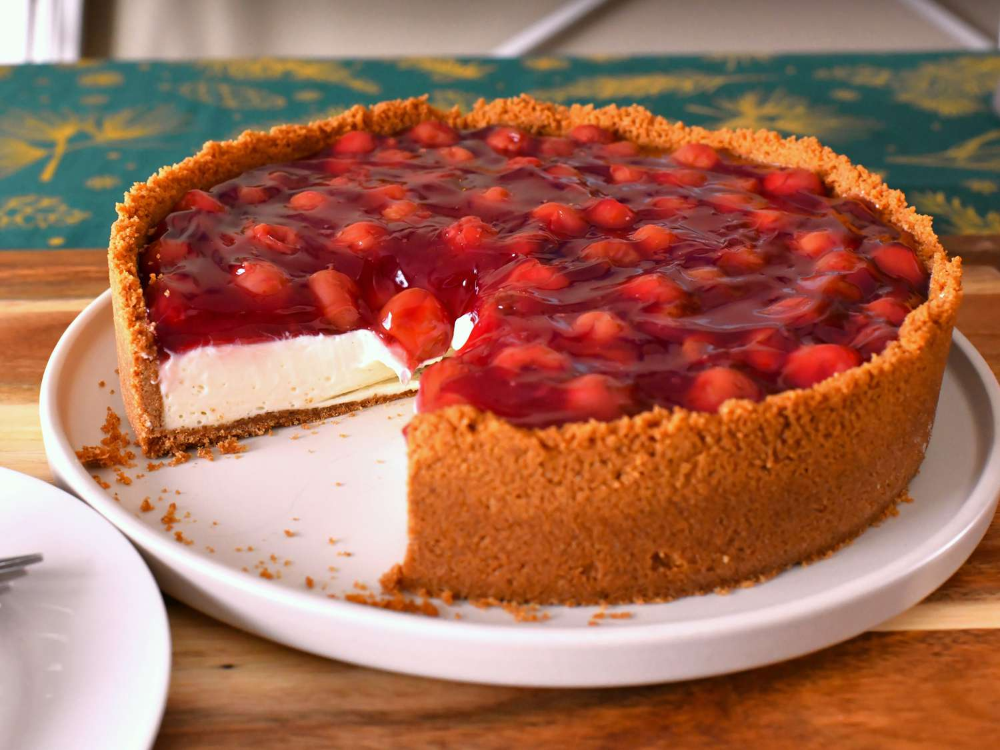

Desserts
-
Chocolate Fondue
Assorted fruits and marshmallows served with rich chocolate fondue.

- Chef Joy's Recipe - it's a simple classic dish from "Valais-SWITZERLAND",that's full of flavor.
-
Tiramisu

Classic Italian dessert with layers of mascarpone cream and coffee-soaked ladyfingers.

- Chef James Hoffmann's Recipe - it's a simple classic dish from "Veneto-ITALY",that's full of flavor.
-
Cheesecake

Creamy cheesecake with a graham cracker crust and a choice of fruit toppings.

- Chef Martha Stewart's Recipe - it's a simple classic dish from "New York-USA",that's full of flavor.